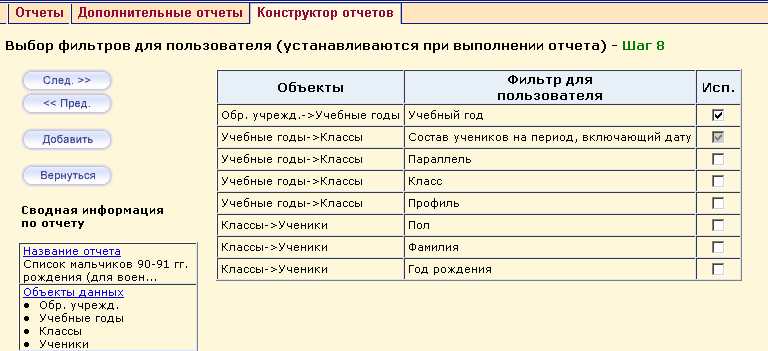

Вы можете создать такой отчет, при выполнении которого пользователь сам смог бы выбирать значения фильтров (параметров). Фильтров может быть несколько или может не быть совсем: это зависит от выбранного на Шаге 2 и Шаге 3 объекта данных.
В нашем примере отчета «Список мальчиков 90-91 гг. рождения» в качестве фильтров для пользователя определяем:
- Учебный год;
- Состав учеников на период, включающий дату (данный фильтр добавляется автоматически, если используются одновременно два объекта: «Ученики» и «Классы»).

Это означает, что при выборе этого отчета у пользователя, кроме стандартных кнопки печати
Для каких объектов данных могут быть указаны подобные фильтры
Подобные фильтры могут быть указаны не для всех объектов данных. В случае, если для данного объекта такой фильтр указать нельзя, вы увидите сообщение Нет параметризуемых объектов.
Полный список фильтров и объектов, к которым они могут быть применены, можно просмотреть в документе под названием "Руководство по Конструктору отчетов".
Кроме того, любое поле (кроме сложных полей) в любом объекте можно сделать фильтром для пользователя.
Вы можете, по желанию, использовать или не использовать фильтры. Для этого оставьте галочки справа от фильтров пустыми и нажмите кнопку След. >> для перехода на завершающий этап - Шаг 9 - Тестирование и публикация.